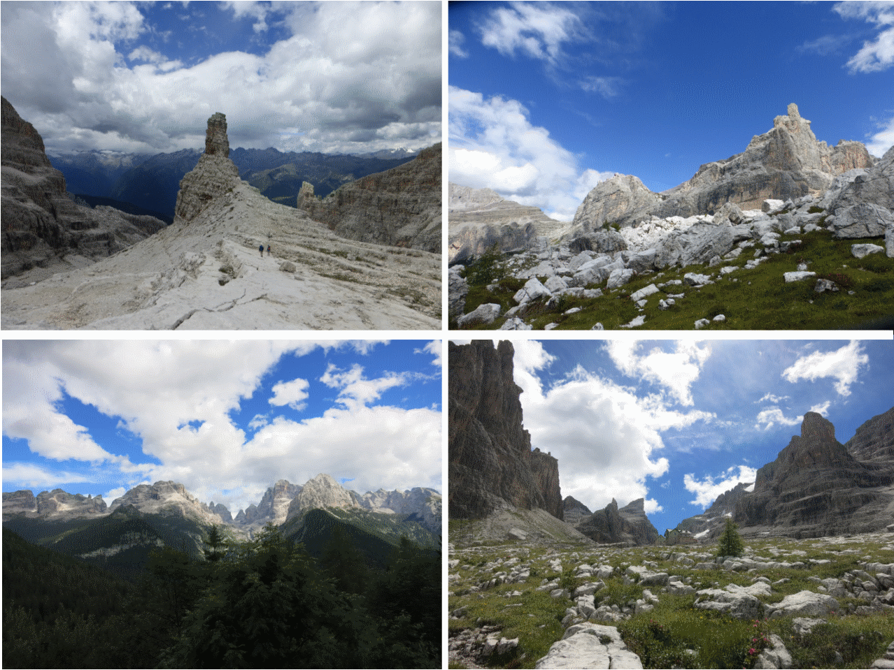
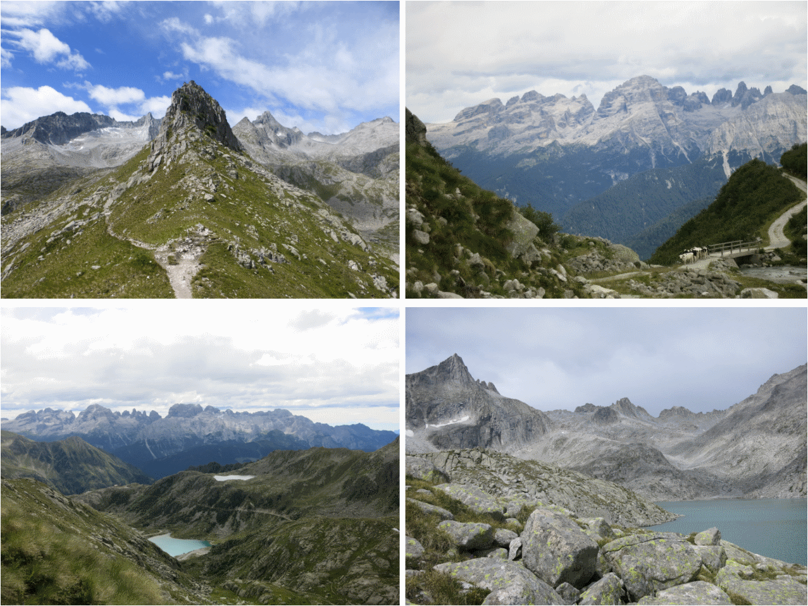
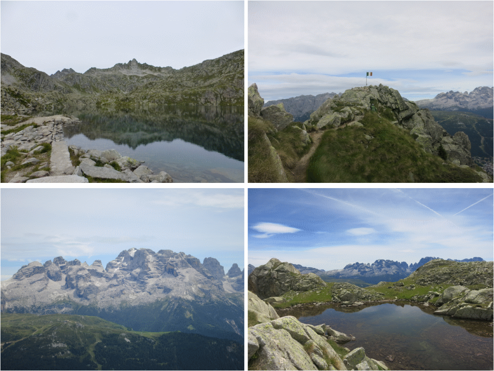

Nous attaquons la découverte des Dolomites depuis Madona di Campiglio (ou plutôt Sant'Antonio di Mavignola, juste au sud, là où était notre camping). Nous sommes arrivés le 24/07 au soir, après avoir fait toute la route depuis Riorges, une sacrée journée ! Mais nous voilà prêts à explorer ces montagnes aperçues sur la fin du trajet :)
| Dates | Randos | Distance | Dénivelé | Via Ferrata ? |
|---|---|---|---|---|
| 25/07/2017 | Bocca di Tuckett | 12km | 1190m de D+ | oui |
| 26/07/2017 | Val Nambrone | 14km | 940m de D+ | non |
| 27/07/2017 | Monte Zeledria | 14km | 870m de D+ | pas essentiel |
Notre première randonnée dans les Dolomites! On a commencé un peu tard après être allé voir l'office de Tourisme à Madona di Campiglio. Mauvaise surprise, la route pour rejoindre Valesinella, début de l'itinéraire, est payante. Et le péage engendre un petit bouchon à la sortie de la ville... Il y a un petit passage en Via Ferrata que nous aurions aimé prolonger, mais le temps était trop menaçant...
A partir du parking de Valesinella, nous avons pris la direction du refuge Casinei (facile et rapide), puis du refuge Francis Fox Tuckett (ou refuge Quintino Sella). Après ce deuxième refuge, le chemin traçait quasiment tout-droit vers le col, en passant un court moment sur le glacier. Une fois au col, la via ferrata commence. On retourne quasiment sur nos pas mais en étant quelques mètres au-dessus, en passant par les rochers !
Une longue boucle avec un petit crochet pour voir en tout 4 lacs ! La randonnée est bien moins raide que la veille, et le dénivelé est concentré sur deux portions: le crochet et après le Lac Negro. Petit bémol, la longue portion sur route au début...
Dernière rando avant de quitter le massif de la Brenta. Nous voulions finir assez tôt pour pouvoir arrive pas trop tard à Canazei le soir même. Pas mal de refuges sur la route, et le passage en Via Ferrata peut se faire sans assurage, le chemin est toujours bien tracé (pas d'escalade) mais peut être un peu vertigineux. Avant d'arriver au sommet, on passe par deux lacs bien sympathiques, puis très beau point de vue du haut du Monte Zeledria !
